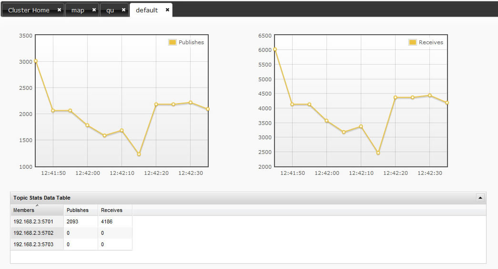

You can monitor your topics' metrics by clicking the topic name listed on the left panel under topics part. There are two charts which reflects live data, and a datatable lists the live data distributed among members.
